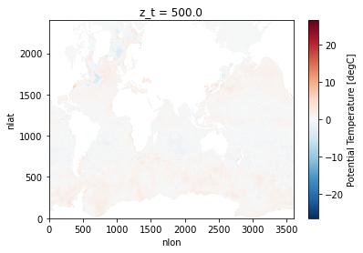
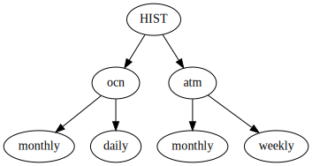

Posts tagged cesm
Analyzing and Visualizing CAM-SE Output in Python
- 15 August 2023
We demonstrate a variety of options for analyzing and visualizing output from the Community Atmosphere Model (CAM) with the spectral element (SE) grid in Python. This notebook was developed for the ESDS Collaborative Work Time on Unstructured Grids, which took place on April 17, 2023. A recap of the related CAM-SE discussion can be found here.
Regrid CAM-SE output using map file

Using Kerchunk with CESM Timeseries Data on the Cloud
- 15 March 2023
We benchmark reading a subset of the CESM2-Large Ensemble stored as a collection of netCDF files on the cloud (Amazon / AWS) from Casper. We use a single ensemble member historical experiment with daily data from 1850 to 2009, with a total dataset size of 600+ GB, from 13 netCDF4 files.
We read in two ways:
Correctly Calculating Annual Averages with Xarray
- 19 November 2021
A common component of people’s workflows is calculating annual averages, which helps reduce the frequency of datasets, making them easier to work with. Two of the data frequencies you may be looking to convert to annual include:
Daily (365 days in each year)

Using Intake-ESM's New Derived Variable Functionality
- 22 October 2021
Last week, Anderson Banihirwe added a new feature to intake-esm, enabling users to add “derived variables” to catalogs! This is an exciting addition, and although this has not been included in a release yet, you are welcome to test out the functionality!
Keep in mind that this is an initial prototype and the API is likely to change.
CESM2-Large Ensemble Reproduction of a Figure from Kay et al. 2015 Using Intake-ESM and hvPlot
- 08 October 2021
This Jupyter Notebook demonstrates how one might use the NCAR Community Earth System Model v2 (CESM2) Large Ensemble (CESM2-LE) data hosted on AWS S3. The notebook shows how to reproduce figure 2 from the Kay et al. (2015) paper describing the CESM LENS dataset (doi:10.1175/BAMS-D-13-00255.1), with the LENS2 dataset.
There was a previous notebook which explored this use case, put together by Joe Hamman and Anderson Banihirwe, accessible on the Pangeo Gallery using this link. The specific figure we are replicating is shown below.

Reimagining Diagnostics Through the Use of the Jupyter Ecosystem
- 24 September 2021
Typically, diagnostics packages are written with following structure, using script-based workflows
Read files and do some preprocessing

Benchmarking Performance of History vs. Timeseries Files
- 17 September 2021
In this example, we will look at how long reading data from the Community Earth System Model (CESM), applying calculations, and visualizing the output takes using the following packages:
Regridding High Resolution Observations to a High Resolution Model Grid
- 10 September 2021
In this example, we will cover how to leverage a useful package from the Pangeo Ecosystem, xESMF. One important note when using this package, is make sure you are using the most up-to-date documentation/version, a few years ago, development moved to the pangeo-data branch of the package, installable using the following:
For this example, we will download a file from the World Ocean Atlas, which includes a variety of ocean observations assembled from the World Ocean Database.
Examining Diagnostics Using Intake-ESM and hvPlot
- 20 August 2021
In previous weeks, we have looked at building Intake-ESM catalogs from history files and visualizing CESM output using Holoviews and Datashader, but this week we are putting together a few of those pieces to visualize a comparison between model runs.
One of the first ESDS blog posts looked at building an interactive dashboard to look at plots, using high resolution ocean model output as the dataset. One of the limitations of that approach is that the images are static - we are pulling in pngs, and rending on the page, as opposed to more interactive options. In this example, we will read in data generated from ecgtools, from a directory only accessible via NCAR’s high performance computing center.
Plotting CESM Data on an Unstructured Grid using Geoviews and Datashader
- 13 August 2021
This week, during Xdev office hours, Steve Yeager raised a question regarding plotting unstructured grid data within Python. He was interested in plotting output from the Community Atmosphere Model, which supports unstructured grids, essentially a combination of triangles allowing for higher resolution in certain parts of the domain. This can be adventageous when wanting to achieve the benefits of high resolution within the primary domain, while maintaining the global scale of the model. This week, NCAR Science tweeted a great explanation of how revolutionary this capability is in the context of resolving processes over Greenland.
Unstructured grids can be difficult to plot directly within Python since they do not follow the typical lat, lon (x, y) convention. There is some preprocessing that needs to be applied before plotting.
Using Intake-ESM to Analyze Data from CESM2-LE
- 06 August 2021
In mid June, the CESM2 Large Ensemble dataset was made available to the public. This model was run in collaboration with the IBS Center for Climate Physics and the National Center for Atmospheric Research This dataset includes 100 ensemble members, at one degree spatial resolution, with each ensemble member including data from 1850 to 2100. If you are interested in learning more about how this ensemble was setup, be sure to check out the main webpage or read the pre-print of Rodgers et al. 2021 which describes this dataset in detail.
One of these challenges with this dataset is dealing with the massive amount of output. The data are available through the NCAR Climate Data Gateway and via the IBS OpenDAP Server. There is also a subset of the dataset available on the GLADE file system on NCAR HPC resources available within the directory /glade/campaign/cgd/cesm/CESM2-LE/timeseries/.

Creating Model Documentation Using Jupyterbook and Intake-esm
- 25 June 2021
A common step to any project is documenting your data and your data workflow. Fortunately, open tools in the scientific python ecosystem make that much easier! In this example, we will cover creating your github repo, creating the catalog, visualizing the catalog, and generating a static webpage you can share with collaborators!
This week’s post is quite detailed, so just a warning! If you would like to look at the finished product, check out the following

CESM Diagnostics Discussion
- 17 June 2021
Every year, NCAR holds the Community Earth System Model (CESM) Workshop which brings together the CESM community to discuss relavant updates from the working groups as well as featured speakers and cross-working group discussions.
During the Software Engineering Working Group (SEWG) session, following a variety of talks, there was an open discussion regarding the current state of CESM diagnostics and future plans for collaboration.

Creating Visualizations of Intake-ESM Catalogs
- 11 June 2021
A common initial task when working with a new dataset is figuring out what data is available. This is especially true when working with climate ensembles with several components and time-frequency output (ex. Community Earth System Model Large Ensemble, CESM-LE). Here, we will examine different methods of investigating this catalog
Here, we will use intake-esm and graphviz, which can be installed using the following (including jupyterlab too!)
Building an Intake-esm catalog from CESM2 History Files
- 04 June 2021
As mentioned in a couple of ESDS posts (intake-esm and Dask, debugging intake-esm), intake-esm can be a helpful tool to work with when dealing with model data, especially CESM. One of the requirements for using intake-esm is having a catalog which is comprised of two pieces:
A table of the relevant metadata (ex. file path, variable, stream, etc.)

An Example of Using Intake-ESM
- 09 April 2021
This past week, NCAR CISL updated the Casper Node to use PBS instead of Slurm for scheduling jobs. This led a post in which an example of spinning up dask clusters on the new configuration. This was also an opportunity to dig into dask, and try applying it to a sample task, specifically looking at ecosystem variables in the CESM-LE dataset, using notebooks included in Matt Long’s krill-cesm-le repository, modified by Kristen Krumhardt.
Here, we spin up our dask cluster. At first, running this notebook resulted in a killed worker error. After further expection, we noticed that additional resources would be needed to read in the notebook since the data are so large (on the order of ~1-2 TB). Increasing the individual worker to a higher amount (ex. 256 GB) solved the issue. Scale up to as many workers as you think are neccessary for the calculation (this may take some trial and error).